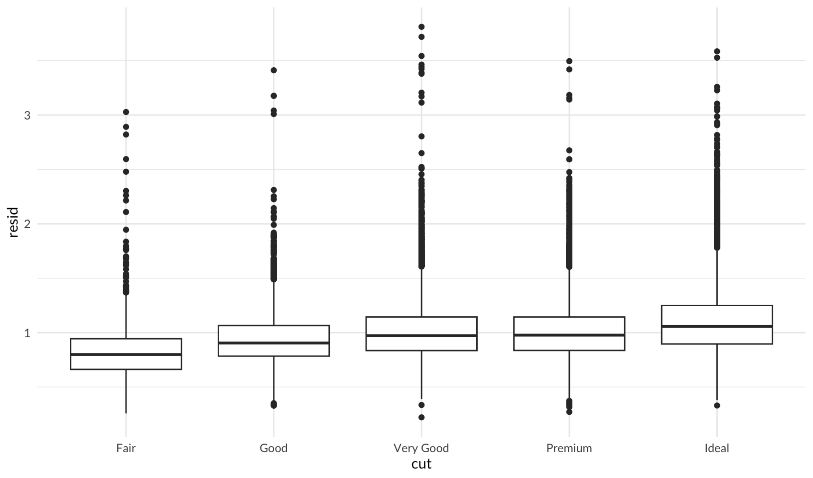

library(tidyverse)
library(jbplot)
library(caTools)R Training Log
notes
Original notes on learning R and RStudio. An updated reading list of R books and other recommended resources is available in R Books.
Libraries
Load libraries and suppress warning and error messages. Thanks to this tidyverse article. Also load rdev and set default theme and color scales.
Files
Files in this project:
.Rbuildignore:.Rhistory:.Rprofile:.Rproj.user:.git:.gitignore:.lintr: lintr configuration fileDESCRIPTION:LICENSE:LICENSE.md:NAMESPACE:README.Rmd:README.md:man:r-training-log.Rmd:r-training-log.nb.html:renv:renv.lock:rtraining.Rproj:setup-r:tests:
Not R
Not R, but has advice on git best practices and a guide to fixing commit mistakes: https://sethrobertson.github.io
Learning R
Resources for learning R.
Already using: these are packages I’m already using in R. Note: much of this has been influenced by the work of Hadley Wickham, who seems to be one of the (if not the most) significant contributors to the modern R and RStudio environment. Most of these have good integration with RStudio.
- renv - for package version management by project
- styler and lintr - for implementing the tidyverse style guide
- Various tidyverse packages, including:
- dplyr
- ggplot2
- glue
- lubridate
- readr
- stringr
- tibble
- tidyr
- Other packages:
- gt
- kableExtra
- miniUI (for RStudio plugins)
- openxlsx
- knitr: there is a useful knitr-spin.R demo script that shows how to knit an R script (from https://yihui.org/knitr/demo/stitch/) - I briefly explored this as an alternative to notebooks
- R Notebooks leveraging GitHub Pages
When in doubt, start with the tidyverse, or RStudio sponsored projects, or built-in R.
Completed: I’ve read these.
- R for Data Science - Hadley’s intro book
In progress: I’m reading these now.
- R Packages - even more Hadley
- testthat - R testing framework
- roxygen2 - document functions inline
Future: I’m planning on adopting these to improve my code quality.
- Full ggplot2 documentation OR
- ggplot2 book, 3rd edition draft: https://ggplot2-book.org
- Advanced R - more Hadley
Also helpful: some additional helpful links, either from me or recommended by others.
- RStudio Education - the Beginners page
- janitor - automate data cleanup
- purrr - for list iteration
- broom - for getting classic stats objects into tidy shapes that are easier to work with
References: other good reference sites.
- Yan Holtz has some good sites for data visualization:
- the R Graph Gallery - charts made with R and ggplot2
- from Data to Viz - recommendations on data visualization
- He also has some tips on R Markdown
- MIT Roxygen Quick Reference
R for Data Science
Selected highlights from the book:
Patterns and models
7.6 Patterns and models covers models and residuals, here showing how to reveal the expected relationship between cut and price:
library(modelr)
mod <- lm(log(price) ~ log(carat), data = diamonds)
diamonds2 <- diamonds %>%
add_residuals(mod) %>%
mutate(resid = exp(resid))
ggplot(data = diamonds2) +
geom_point(mapping = aes(x = carat, y = resid)) +
theme_quo()ggplot(data = diamonds2) +
geom_boxplot(mapping = aes(x = cut, y = resid)) +
theme_quo()
Non-Tidy Data
Hadley advocates for “tidy” data, but there are times when data is usefully non-tidy.
Graphics: Learning more
From 28.8 Learning more:
“The absolute best place to learn more is the ggplot2 book: ggplot2: Elegant graphics for data analysis. It goes into much more depth about the underlying theory, and has many more examples of how to combine the individual pieces to solve practical problems. Unfortunately, the book is not available online for free, although you can find the source code at https://github.com/hadley/ggplot2-book.
Another great resource is the ggplot2 extensions gallery https://exts.ggplot2.tidyverse.org/gallery/. This site lists many of the packages that extend ggplot2 with new geoms and scales. It’s a great place to start if you’re trying to do something that seems hard with ggplot2.”
R Markdown Websites
From 29.8 Websites:
“With a little additional infrastructure you can use R Markdown to generate a complete website:
- Put your
.Rmdfiles in a single directory.index.Rmdwill become the home page. - Add a YAML file named
_site.ymlprovides the navigation for the site. For example:
name: "my-website"
navbar:
title: "My Website"
left:
- text: "Home"
href: index.html
- text: "Viridis Colors"
href: 1-example.html
- text: "Terrain Colors"
href: 3-inline.htmlExecute rmarkdown::render_site() to build _site, a directory of files ready to deploy as a standalone static website, or if you use an RStudio Project for your website directory. RStudio will add a Build tab to the IDE that you can use to build and preview your site.
Read more at https://bookdown.org/yihui/rmarkdown/rmarkdown-site.html.”
R Notebook Advice
Hadley has some good suggestions for R Notebooks in 30 R Markdown workflow.
R Packages
Notes from the book. I’ve started writing all code in the package structure described in the book and used by Hadley and the tidyverse. Doing so makes it easier to write tests, documentation, track dependencies, and provides convenient continuous integration through R CMD check.
System Setup
Chapter 3 has good coverage of setting up a system for R development, I’ve incorporated what I learned from this into my “R Setup Log”.
Naming Things
Package names are pretty restricted, but Hadley has some good recommendation on naming them, including the “available” package, which I’ve started using.
RStudio
There are some helpful tips in the RStudio section, including 2 key shortcuts to remember:
- control-. to “Go to file/function”
- alt-shift-k for the keyboard shortcut quick reference
- not a shortcut, but use
proj_sitrep()to query active projects and working directory
Writing Better Code
Chapter 6, The Package Within, highlights some sub-optimal R code and shows how to clean it up. It never occurred to me to use a left join to clean up data, and I’ve already started using the technique.
R and Homebrew
7.4 Code Style includes a footnote that references my favorite open source project, Homebrew:
The Robot Pedantry, Human Empathy blog post by Mike McQuaid does an excellent job summarizing the benefit of automating tasks like code re-styling.
I’ve contributed to homebrew, but I’ve only recently realized how advanced a project it truly is - “advanced” DevOps concepts like trunk-based development and pedantic continuous integration checks just make sense to me, thanks to my experiences contributing. And, I’ve been the recipient of a “You Rock!” from Mike, which felt great, and still does now, even after learning it was partially automated.
Package Conventions
From 7.6 Respect the R landscape:
Avoid using any of the following:
library()
require()
source()
options()
par()
setwd()
Sys.setenv()
Sys.setlocale()
set.seed()Instead, manage dependencies through roxygen2 and the DESCRIPTION file. Use withr when you need to modify state.
R Demos
Interesting demonstrations of R code.
Wikipedia
A fun demo taken from the Wikipedia article on R:

local({
# install.packages("caTools") # install external package
# library(caTools) # external package providing write.gif function
# note: the code in the text of the Wikipedia article doesn't match the code
# used to generate the image in the article,
# https://commons.wikimedia.org/wiki/File:Mandelbrot_Creation_Animation.gif
# the colors here have been changed to match the image.
jet.colors <- colorRampPalette(c(
"#00007F", "blue", "#007FFF", "cyan", "#7FFF7F",
"yellow", "#FF7F00", "red", "#7F0000"
))
dx <- 1500 # define width
dy <- 1400 # define height
C <- complex(
real = rep(seq(-2.2, 1.0, length.out = dx), each = dy),
imag = rep(seq(-1.2, 1.2, length.out = dy), dx)
)
C <- matrix(C, dy, dx) # reshape as square matrix of complex numbers
Z <- 0 # initialize Z to zero
X <- array(0, c(dy, dx, 20)) # initialize output 3D array
for (k in 1:20) { # loop with 20 iterations
Z <- Z^2 + C # the central difference equation
X[, , k] <- exp(-abs(Z)) # capture results
}
write.gif(X, "rendered/mandelbrot.gif", col = jet.colors, delay = 100)
})Warning in complex(real = rep(seq(-2.2, 1, length.out = dx), each = dy), :
partial argument match of 'imag' to 'imaginary'